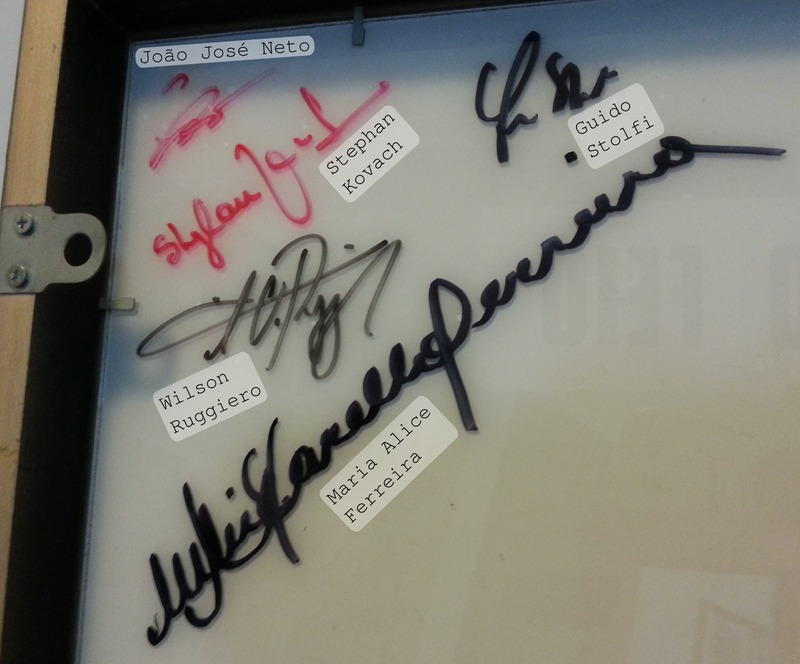
Painel do “Pato Feio”, autografado pelos projetistas originais
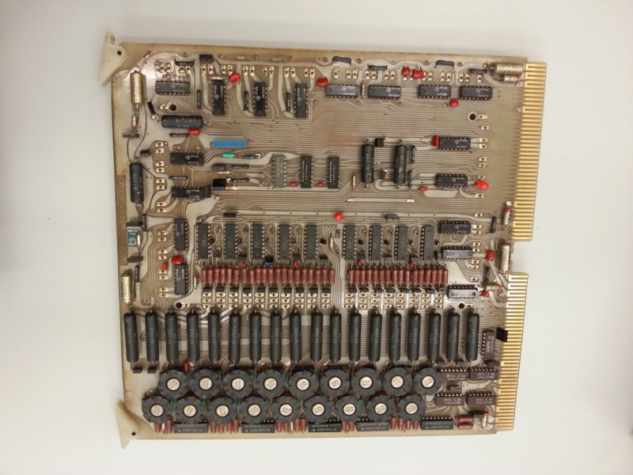
Módulo de Memória do Computador G-10 (1975)
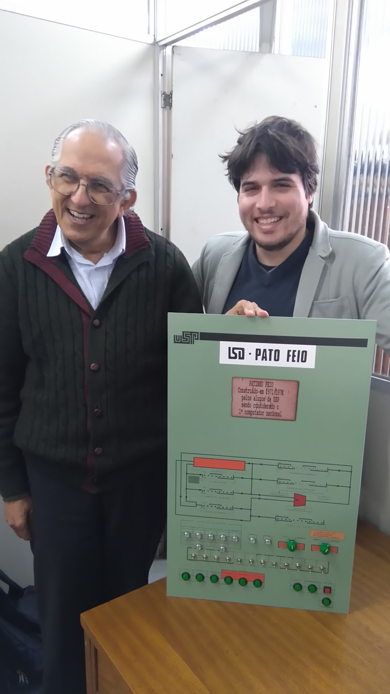
Painel do “Pato Feio”, apresentado a J.J. Neto por F. Sanches
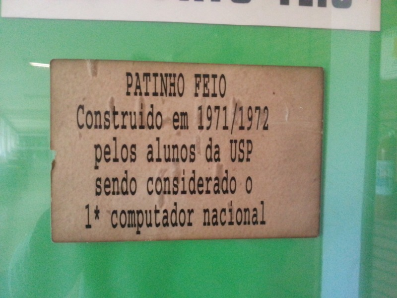
Label do “Pato Feio”, original
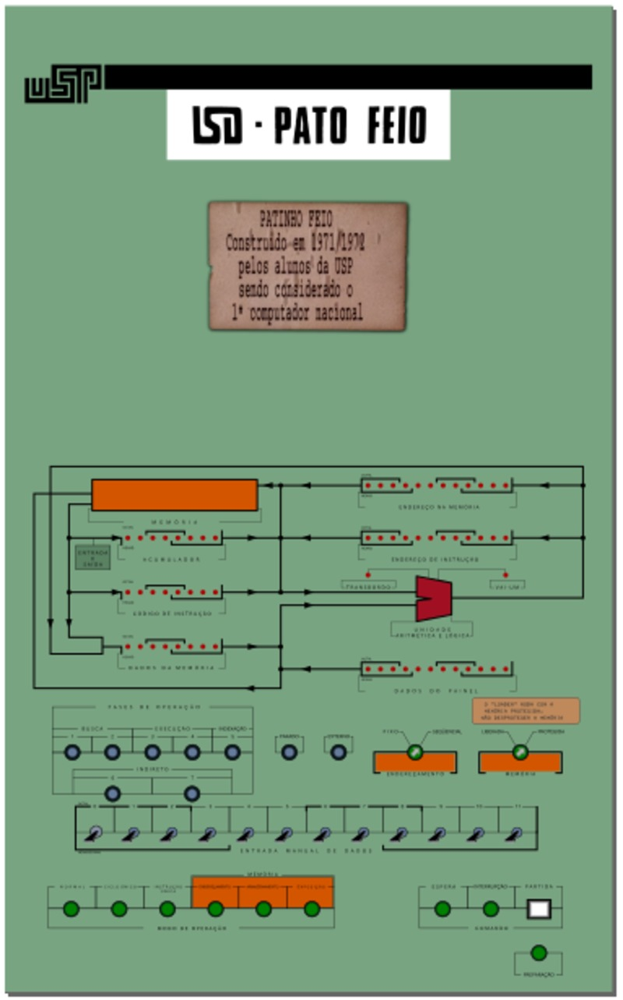
Layout - Painel do “Pato Feio”
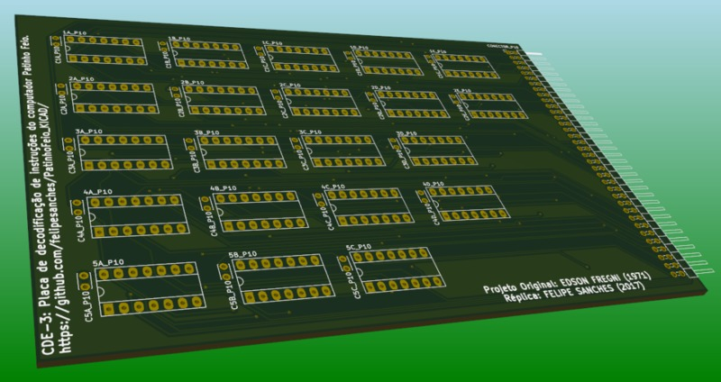
Layout - Placa CDE-3 (3D) (1)
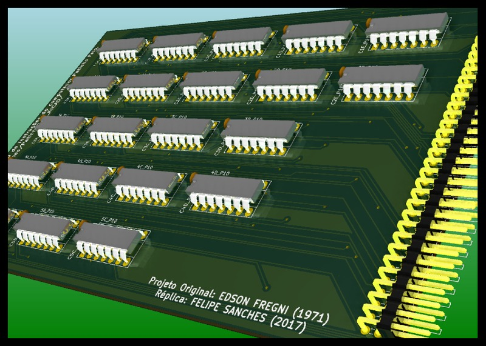
Layout - Placa CDE-3 (3D) (2)
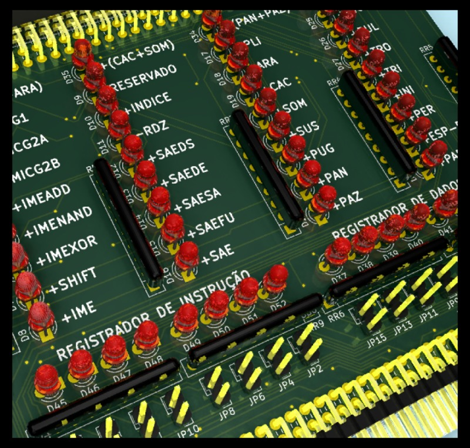
Layout - Placa CDE-3-DBG (3D) (1)
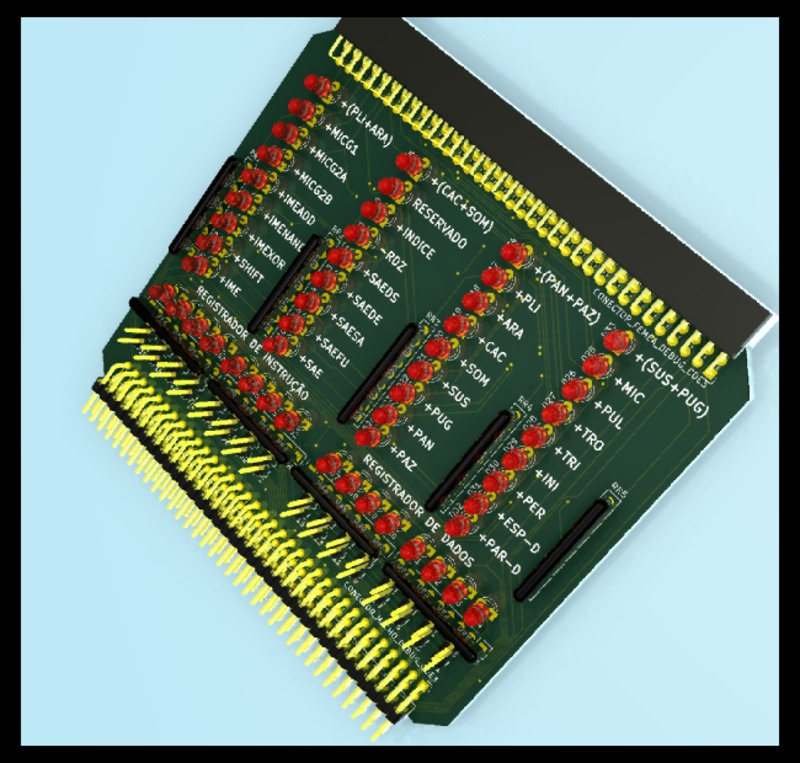
Layout - Placa CDE-3-DBG (3D) (2)
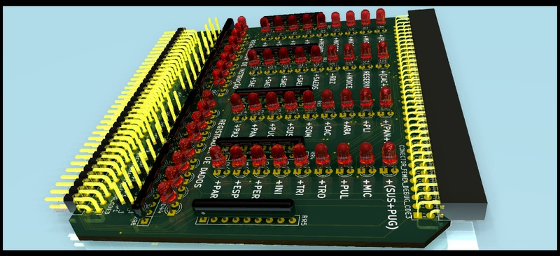
Layout - Placa CDE-3-DBG (3D) (3)
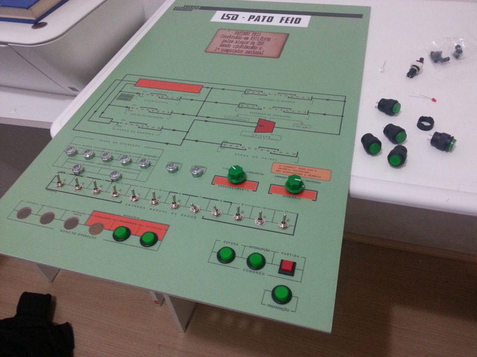
Construção do Painel do “Pato Feio”
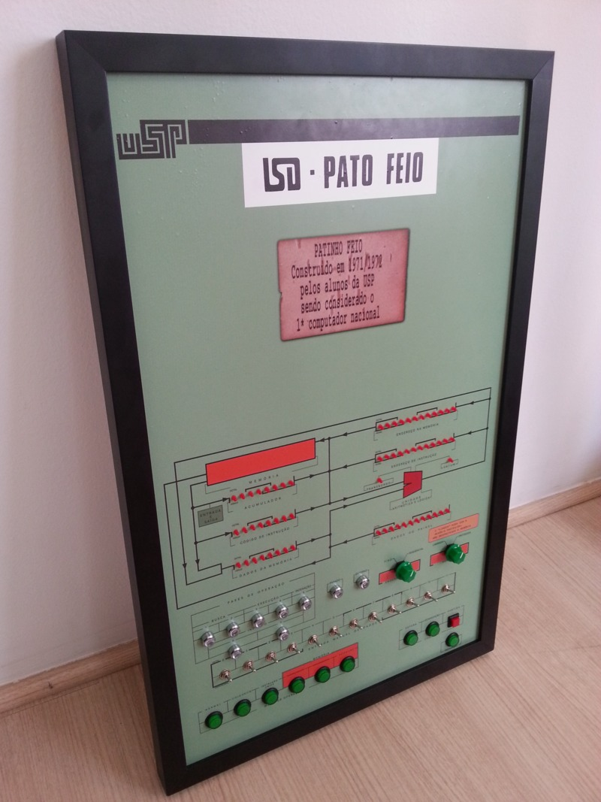
Painel do “Pato Feio”, já emoldurado
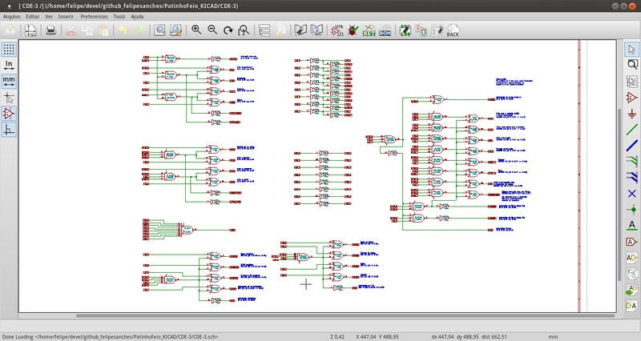
Diagrama Lógico - Decodificador de Instruções do “Pato Feio” (2017)
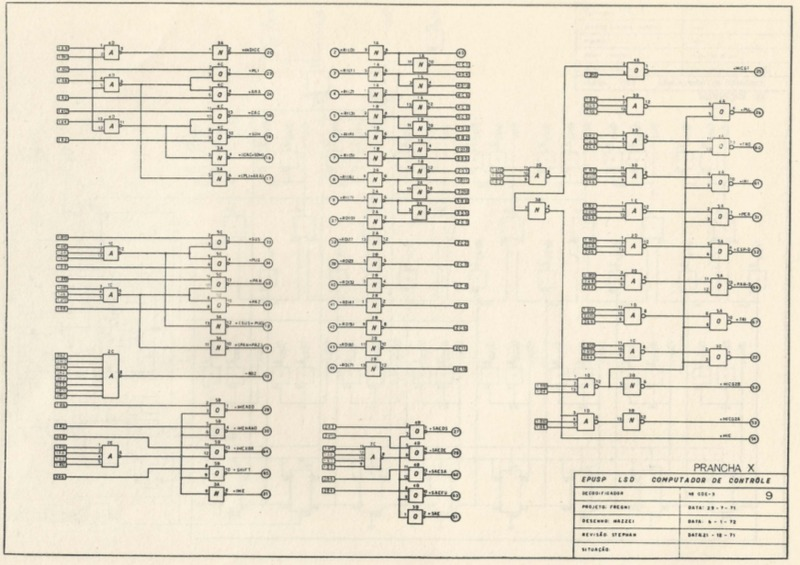
Diagrama Lógico - Decodificador de Instruções do “Pato Feio” (1971)
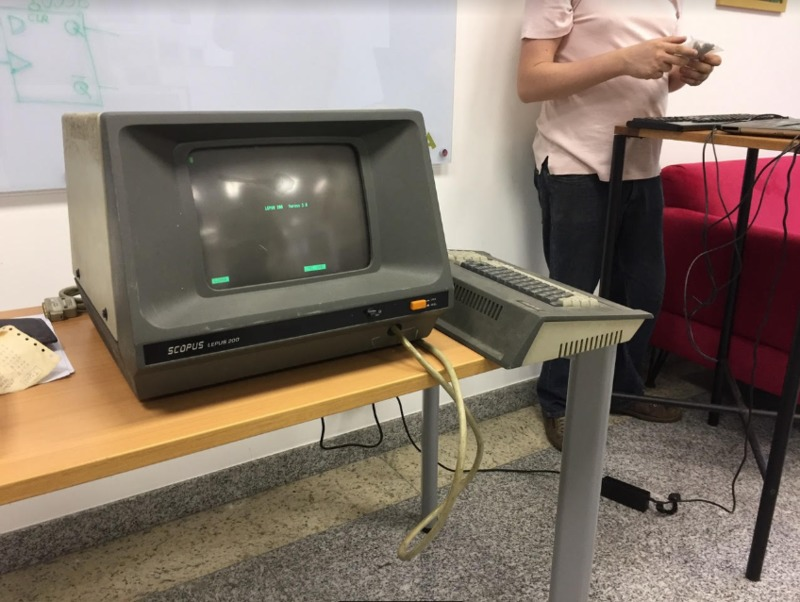
Exame do Scopus Lepus 200 por F. Sanches / D. Quadros / W. Moecke no LaSSu (1)
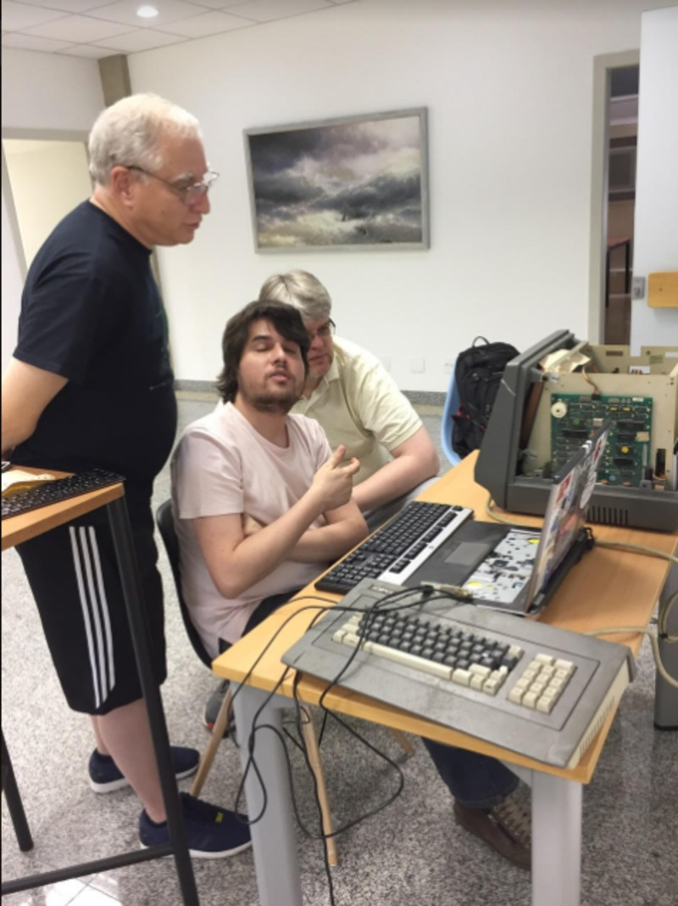
Exame do Scopus Lepus 200 por F. Sanches / D. Quadros / W. Moecke no LaSSu (2)
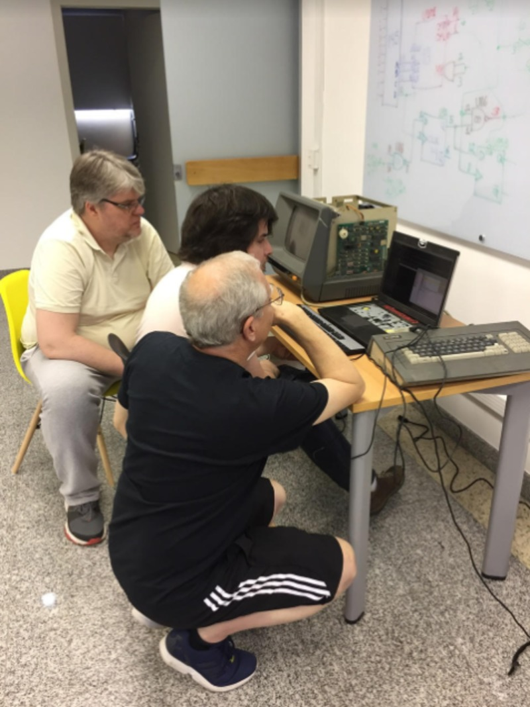
Exame do Scopus Lepus 200 por F. Sanches / D. Quadros / W. Moecke no LaSSu (3)